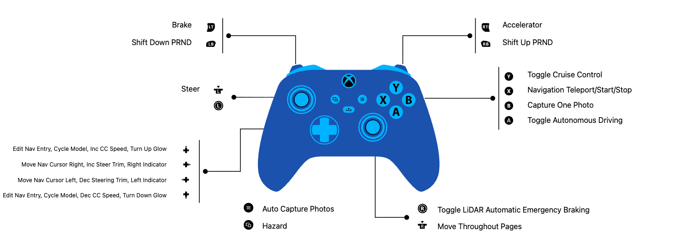

Controller Mapping and Driving Modes
The car is driven and fully operated from an Xbox Wireless Controller over pygame.
This page is the human-readable reference for every button, trigger, stick, and D-pad action. The constants and event handling in config.py and runtime.py remain authoritative.
How It Works
runtime.py reads pygame joystick events every loop (pygame.event.get()) and
dispatches axis, button, and hat (D-pad) events to driving, gearing, autonomy, photo
capture, navigation, turn signals, and dashboard paging. Every button and axis index is
a named constant in config.py, so the physical layout and the dispatch code stay in
sync. The values below are read straight from config.py and the event handler in
run().
Controller Map (Image)

Sticks and Triggers
| Physical input | pygame axis | Constant | Action |
|---|---|---|---|
| Left stick X | 0 |
STEERING_AXIS |
Steering; deadzone abs(v) < 0.10 snaps to center |
| Right stick Y | 3 |
DASHBOARD_PAGE_AXIS |
Dashboard: move page up/down (threshold 0.65) |
| Right stick X | 2 |
DASHBOARD_PAGE_HORIZONTAL_AXIS |
Dashboard: move page column left or right (threshold 0.65) |
| Right trigger | 4 |
THROTTLE_AXIS |
Throttle (normalized to 0..1) |
| Left trigger | 5 |
BRAKE_AXIS |
Brake (brake engages above 0.1) |
Qualifying manual steering, throttle, or brake input while autonomy is on calls the cancel path when that input is processed by the Raspberry Pi 5 loop. A timed worst-case override latency has not yet been measured.
Buttons
Indices below are the config.py constants; the physical Xbox label is the mapping
observed on this controller.
| Physical button | pygame index | Constant | Action |
|---|---|---|---|
| A | 0 |
AUTONOMY_TOGGLE_BUTTON |
Toggle autonomous driving (forces gear D on) |
| B | 1 |
PHOTO_BUTTON |
Take a single photo (take_photo) |
| Menu | 11 |
AUTO_PHOTO_BUTTON |
Toggle continuous run capture at the configured 10 fps while moving |
| View | 10 |
HAZARD_BUTTON |
Toggle hazard lights |
| Y | 4 |
CRUISE_TOGGLE_BUTTONS |
Cruise-control toggle (only in gear D) |
| LB | 6 |
SHIFT_DOWN_BUTTON |
Shift down (P←R←N←D) |
| RB | 7 |
SHIFT_UP_BUTTON |
Shift up (P→R→N→D) |
| RSB (right stick click) | 14 |
AEB_TOGGLE_BUTTON |
Toggle Automatic Emergency Braking |
| X | 3 |
NAV_SELECT_BUTTON |
Jump to NAVIGATE page (page 5); advance/confirm entry; start or cancel a route |
| Share | 15 |
QUIT_BUTTON |
Quit (sets shutdown flag) |
D-Pad (Hat)
| Input | Action |
|---|---|
| D-pad ←/→ | Left and right turn-indicator toggles; on the NAVIGATE page (5), it also moves the entry cursor |
| D-pad ↑/↓ | Context action: edit the navigation entry on page 5, cycle the steering model on page 2, or adjust cruise target speed or dashboard brightness elsewhere. Holding repeats after DPAD_SCROLL_REPEAT_START_SEC (0.6 s) at DPAD_SCROLL_REPEAT_INTERVAL_SEC (0.22 s) |
Notes
- These are the indices as they exist in the code today. If
config.pybutton constants change, this table is the place to re-verify againstrun()'s event handler. - Physical labels (A/B/X/Y) reflect how this Xbox controller enumerates under pygame on the Raspberry Pi 5; the code keys off the numeric index, not the label.
PRND Behavior
The gear state begins in Park and steps through P, R, N, and D with LB/RB. Park forces zero PWM and braking; Reverse applies negative motor PWM; Neutral coasts with zero PWM; Drive permits forward manual throttle, cruise, or autonomy. A shift cancels cruise. Enabling autonomy forces Drive. Forward AEB logic is intentionally skipped in Reverse so the driver can back away from a detected obstacle.
Photo Capture
B queues one image. Menu toggles continuous capture at a configured 10 fps while the car is moving or commanded to move. A dated run directory receives timestamped JPEGs and a labels CSV containing logical steering (0..180) and absolute physical forward PWM (0..1). JPEG encoding and writing run outside the control loop. Finalization converts the CSV to the JSON format accepted by training.
The label is a software command sampled near the frame request, not measured wheel-angle or motor-torque feedback. Every run must be audited for decodable images, complete labels, and accidental stationary repetition before training.